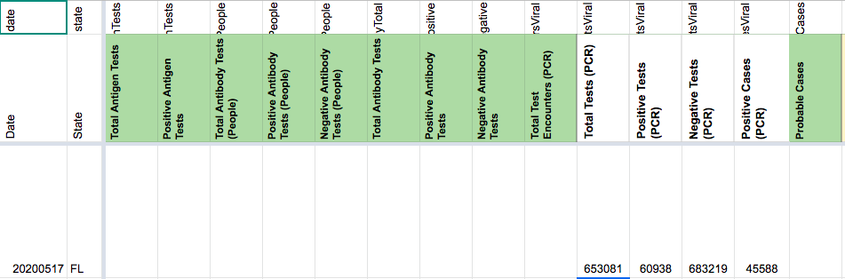

#1010: [FL] Update 12/11 late updated test values
Issue number 1010
hmhoffman opened this issue on December 12, 2020, 2:17 PM PST
State: FL
Dates affected: 12/11
Describe the issue: On December 11, 2020, Florida did not update their state report by the time of our daily update so we could not update Total PCR tests (specimens), Positive PCR tests (specimens), Negative PCR tests (specimens), Positive PCR tests (people), or Probable cases.
Comments
#1003: [FL] Clear confirmed deaths from 8/11 onward
Issue number 1003
karaschechtman opened this issue on December 10, 2020, 9:38 AM PST
Labels Backfill
On 8/11, FL added antigen tests to its data definition for deaths, which were previously PCR only. Since FL does not call these deaths "confirmed," we are clearing confirmed deaths from 8/12 onward (since we are on a one day lag in terms of when the data is as of). Data_Definitions 08112020.pdf
Comments
#966: [FL] 11/21/20 PDF updated after pub shift, need to update
Issue number 966
whobody opened this issue on November 22, 2020, 7:42 PM PST
Labels Backfill Data quality
State or US: [State name, or "US" if this is an issue with country-wide data]
FL
Describe the problem
Pub shift did not catch the FL pdf. Need to backfill:
Total Tests (PCR) Positive Tests (PCR) Negative Tests (PCR) Positive Cases (PCR) Probable Cases
Link to data source
http://ww11.doh.state.fl.us/comm/_partners/covid19_report_archive/cases-monitoring-and-pui-information/state-report/state_reports_latest.pdf
Comments
#914: [FL] Backfill total test encounters and cases from open hub data
Issue number 914
muamichali opened this issue on October 26, 2020, 6:37 PM PDT
Labels Data quality
State or US: Florida
Describe the problem Florida has provided a total number of tests and cases going back to 1/28 on their open data hub. This backfills the data in order to provide a total tests metric that reflects repeat testing.
Link to data source https://open-fdoh.hub.arcgis.com/datasets/a91ca3832bd448a2a1b1bedad199ba2b/geoservice?page=25
Comments
From the public note: On October 27, Florida started providing a full timeseries of total test encounters excluding tests from individuals after they test positive. This timeseries only reflects Florida residents, so we have also revised our existing cases figures and unique individuals tested figure to reflect only residents. These changes resulted in a 1.28% decrease in Florida's cases and a 0.38% decrease in Florida's unique people tested.
This change affects:
- Positive Cases (People, confirmed + probable)
- Positive Cases (PCR)
- Probable Cases
- Total Test Encounters (PCR)
- Total PCR Tests (People)
Attaching the analysis spreadsheet as well as the sheets we used as intermediate steps for the data.
Analysis sheet: FL - Analysis 20201026.csv.txt
Time series downloaded from florida covid data hub ("Florida COVID19 State Testing Totals"), linked in @muamichali's description above). This is referred to as "FL download 10-26-2020" in the analysis sheet: FL - FL download 10-26-2020.csv.txt
Time series built from florida's daily PDF summaries, over time, this is referred to as "PDF 10-26" in the analysis sheet: FL - PDF 10-26.csv.txt
#896: [FL] Moving Antigen positives to Probable cases column
Issue number 896
the-daniel-lin opened this issue on October 13, 2020, 11:54 AM PDT
Labels API Data quality
State or US: Florida
Describe the problem From outreach, Florida flips Antigen positive cases to PCR positive cases in their daily state report upon confirmatory PCR testing. We're moving the Antigen positive column values to the Probable Cases column and capturing accordingly.
Link to data source http://ww11.doh.state.fl.us/comm/_partners/covid19_report_archive/cases-monitoring-and-pui-information/state-report/state_reports_latest.pdf
Comments
BEFORE:


AFTER:


#873: [FL] Backfilling Positive Cases (PCR)
Issue number 873
the-daniel-lin opened this issue on September 29, 2020, 3:59 PM PDT
Labels Backfill Data quality Historical Data
State or US: Florida
Describe the problem On 8/14, FL began to separate the Total Cases on their daily state report by antigen and PCR tests. We began to capture the antigen tests in the respective cell, but we never captured the PCR Positives metric.
Backfilling Positive Cases (PCR) through 8/14 with a resident+non-resident calculation for PCR Positives.
Link to data source http://ww11.doh.state.fl.us/comm/_partners/covid19_report_archive/
Comments
BEFORE:
AFTER:
#858: FL positivity rate is skewed upwards by more than 100% error
Issue number 858
stevenjwolfman opened this issue on September 22, 2020, 11:43 AM PDT
Labels Data quality stale
State or US: FL
Describe the problem The number of FL tests performed is based on the cumulative people tested yesterday compared to the cumulative people tested today. This is clearly a mistake because since more and more people have been tested and are therefore from ineligible to be counted as a negative test again, it creates a downward bias in the number of tests even if the same number of people are being tested. Reductio ad absurdum, once everyone has been tested once, the number of new positives would be greater than the number of new people who were tested because no new people were tester. This is a very big mistake.
Link to data source
 https://fdoh.maps.arcgis.com/apps/opsdashboard/index.html#/8d0de33f260d444c852a615dc7837c86
https://fdoh.maps.arcgis.com/apps/opsdashboard/index.html#/8d0de33f260d444c852a615dc7837c86
Comments
This issue has been automatically marked as stale because it has not had recent activity. It will be closed if no further activity occurs. Thank you for your contributions!
This issue has been closed because it was stale for 15 days, and there was no further activity on it for 10 days. You can feel free to re-open it if the issue is important, and label it as "not stale."
#749: [FL] Incorrect Testing Value, 5/17; Total Tests PCR (People) before 5/13; missing Total Tests (PCR) before 5/17
Issue number 749
jesseandersonumd opened this issue on August 11, 2020, 8:02 AM PDT
Labels Data quality Historical Data stale
State: FL
ISSUE ONE - resolved Date impacted: 5/17 Issue: We incorrectly reported Total Tests (PCR) on 5/17 as 653081 when it should be 746124. Source: http://ww11.doh.state.fl.us/comm/_partners/covid19_report_archive/state_reports_20200517.pdf
ISSUE TWO Date impacted: Before 5/13 Issue: missing Total Tests PCR (People) before 5/13 Source: http://ww11.doh.state.fl.us/comm/_partners/covid19_report_archive/state_reports_20200517.pdf
ISSUE THREE Date impacted: 5/17 Issue: missing Total Tests (PCR) before 5/17 Source: http://ww11.doh.state.fl.us/comm/_partners/covid19_report_archive/state_reports_20200517.pdf
Comments
BEFORE: 
AFTER:
Double-checked. Everything looks good.
This issue has been automatically marked as stale because it has not had recent activity. It will be closed if no further activity occurs. Thank you for your contributions!
This issue has been closed because it was stale for 15 days, and there was no further activity on it for 10 days. You can feel free to re-open it if the issue is important, and label it as "not stale."
#699: [FL] Antibody test reporting in people
Issue number 699
brianskli opened this issue on July 30, 2020, 6:30 AM PDT
Labels Historical Data PCL/SVP Historicals
State or US: Florida
Describe the problem It was found that our antibody test numbers from FL refer to people, not specimens. The numbers will need to be copied from the tests columns in States Daily to people columns.
Link to data source https://floridahealthcovid19.gov/?track_covid19
Comments
Our need to transfer to people antibody reporting was verified.
Action items:
1/4: WS2 private note left
Before:
 After:
After:

2/4: WS2 source notes changed Before: After:
3/4: Data in States Daily copied to correct columns
Before:
 After:
After:
4/4: WS2 pre-filled
#698: [FL] Antibody specimen count backfill
Issue number 698
brianskli opened this issue on July 30, 2020, 6:26 AM PDT
Labels Backfill Historical Data Missing Data PCL/SVP Historicals not stale
State or US: Florida
Describe the problem It was determined that CTP's existing antibody test capture refers to people, not specimens. Existing data was copied into the correct columns.
Specimens now need to backfilled using the Serology Report provided by FL.
Link to data source https://floridahealthcovid19.gov/?track_covid19
Comments
This is the best, because it was already done in the past
#624: [FL] PCL Cases Historical
Issue number 624
the-daniel-lin opened this issue on July 14, 2020, 7:51 AM PDT
Labels Backfill PCL/SVP Historicals stale
State or US: Florida Describe the problem Our 'Positive Cases (PCR)' column records back to 4/29. A downloadable csv (accessible through the dashboard) provides individual case data that includes date and time back to 3/2. If we chart out the data, we can aggregate cumulative confirmed PCR cases for back-filling prior to 4/29.
Link to data source https://open-fdoh.hub.arcgis.com/datasets/florida-covid19-case-line-data?orderBy=Case1&selectedAttribute=Case1
Comments
This issue has been automatically marked as stale because it has not had recent activity. It will be closed if no further activity occurs. Thank you for your contributions!
This issue has been automatically marked as stale because it has not had recent activity. It will be closed if no further activity occurs. Thank you for your contributions!
This issue has been closed because it was stale for 15 days, and there was no further activity on it for 10 days. You can feel free to re-open it if the issue is important, and label it as "not stale."
#602: [FL] remove one-off hospitalization data point from reporting as of 5/14
Issue number 602
muamichali opened this issue on July 10, 2020, 12:54 PM PDT
Labels Data quality
State or US: FL
Describe the problem One-off data point from reporting was carried over for 7 days and does not reflect the trend of the time.
Link to data source https://www.facebook.com/GovRonDeSantis/videos/239526690673386/ 4:09
Comments
BEFORE
AFTER
This looks good @muamichali
#558: [FL] Hospitalization Data
Issue number 558
preddy17 opened this issue on June 29, 2020, 8:27 AM PDT
FL doesn't report daily numbers for hospitalizations. Can we please remove or amend it in the API?
Comments
As of July 10, Florida is reporting current hospitalizations as those with a "primary diagnosis of COVID-19."
#542: [FL] PCL Historicals and WS2
Issue number 542
pscsharon opened this issue on June 26, 2020, 6:25 AM PDT
Labels PCL/SVP Historicals
Death values are historically recorded in both the "Deaths" and "Deaths (Confirmed)" columns for FL. However, FL’s death values are unclear about what they represent, so they should only be recorded in the main "Deaths" field.
Comments
Added tooltip as well as process note.

On 6/27, Restored confirmed deaths since the data dictionary reflects that FL deaths are confirmed.
Tooltips and process notes in WS2 were updated.
REFERENCE: Screenshot of current dashboard here. Full text of fine print in bottom right says this: "The Deaths by Day chart shows the total number of Florida residents with confirmed COVID-19 that died on each calendar day (12:00 AM - 11:59 PM). Death data often has significant delays in reporting, so data within the past two weeks will be updated frequently."

Updated "State Website Deaths" and "Reasoning" in PCL to correspond to note added in "Misc Notes."
Restoring deaths (confirmed) value for 6/26 and closing the issue
#413: 5/12 FL -- inconsistencies between death count and screenshots
Issue number 413
mayaeb opened this issue on May 12, 2020, 12:53 PM PDT
Labels Data quality
(Pulled from the support desk)
Hello,
I am a reporter in Gainesville, Florida with The Independent Florida Alligator, a student newspaper.
I was looking at data for Florida, and I noticed inconsistencies with the death count numbers published on the site and the screenshots recorded. Looking and comparing the latest, I see that the last number recorded on the Florida tracking page is significantly different from the current number posted on the Florida Department of Health dashboard. The COVID Tracking count is greater than the dashboard count.
Is this count including data that is not shown in the dashboard? Did I miss something?
Any clarification or information would be greatly appreciated. Thank you,
Comments
We report using the raw data provided by FDOH but we include both Florida residents and non-residents. On March 26, the dashboard stopped including non-residents in its visible counts, but they're still tracked behind the scenes.
#366: FL Data Inconsistent With State Data
Issue number 366
rgurnitz opened this issue on May 5, 2020, 11:08 AM PDT
From the Governor's Conference of today:
**_May 4th represented the best testing for Florida since the start of the pandemic.
Florida received 23,884 test results, which yielded only 589 new Florida cases and the lowest statewide positivity rate – 2.61% - on record for new cases._**
For May 4th, you show about 7,000 less in terms of test results. Can you comment on the gap?
Thank you.
Bob
Comments
Thanks @rgurnitz. We take our testing data from the FL department of health dashboard: https://experience.arcgis.com/experience/96dd742462124fa0b38ddedb9b25e429/ Lots of states say the lag on total tests reported can be > 72hrs. So, the total test number might not have been updated on the dashboard by our publish time on 5/4. Our Positive and Negative test numbers for 5/4 our consistent with archived screenshots from that day: https://covid-data-archive.s3.us-east-2.amazonaws.com/state_screenshots/FL/FL-secondary-20200504-180746.png
#207: FL April 16 2020
Issue number 207
fishjumping opened this issue on April 17, 2020, 8:51 AM PDT
Labels Data source
The last two screenshots (assuming they were taken) are not showing and none of the screenshots agree with the number of hospitalizations saw 3458 and the page is showing 3460
Comments
Hi @fishjumping
There are only two screenshots available for that day due to a technical issue.
We report FL hospitalizations using the raw data provided by FDOH. On 3/26 their dashboard stopped including non-residents in its visible counts, but they still track them behind the scenes.
thanks
On Wed, Apr 22, 2020 at 7:42 PM Michal M notifications@github.com wrote:
Hi @fishjumping https://github.com/fishjumping
There are only two screenshots available for that day due to a technical issue.
We report FL hospitalizations using the raw data provided by FDOH. On 3/26 their dashboard stopped including non-residents in its visible counts, but they still track them behind the scenes.
— You are receiving this because you were mentioned. Reply to this email directly, view it on GitHub https://github.com/COVID19Tracking/issues/issues/207#issuecomment-618094842, or unsubscribe https://github.com/notifications/unsubscribe-auth/APHIL37TDKJDIEGPMKCN2TDRN56G3ANCNFSM4MK3GUJA .
FL 12:11 test backfill changes.xlsx